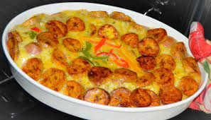

Plantain And Egg Fritata

Description
Plantain frittata is the ultimate plantain and eggs breakfast recipe,
The sweetness of the plantains pairs so well with
the savoriness of the eggs and other ingredients,
It's so easy to make yet so tasty,You'll want to make this over and over again!
what does plantain and egg give to the body?
Plantain and egg fritata contains potassium and is good for the heart and other organs. Other health benefits of plantain are that it
contains magnesium needed for regulation of blood pressure; it prevents osteoporosis and absorption of calcium. It also
helps to control migraine, insomnia and depression.
Ingredients
- 2-3 ripe plantains
- 1 tablespoon canola oil
- 1/2 medium onion thinly sliced
- 1 scotch bonnet pepper diced sub hot sauce
- ½ red/green bell pepper stem, ribs, and seeds removed, then thinly sliced in strips
- 1 small tomatoes
- 1 teaspoon paprika
- 1 teaspoon minced garlic
- Coarse salt and ground pepper
- 1 teaspoon Fresh thyme or any herb
- 6 large eggs
- 1/2 -1 cup sausage chopped
Steps
- Adjust the oven rack to the middle position and preheat oven to 350 degrees F
- Grease a 10- inch baking pan or muffin pan, set aside
- Using a sharp knife cut both ends off the plantain, remove plantain peel by pulling it back this will make it easy to grab the skin of the plantain then Slice the plantains into desired shape and size
- Place them on the baking sheets in a single layer, spray lightly over the plantains using the canola oil spray and bake,
turning over slices, after 8 minutes for about 12- 20 minutes or till golden brown, depending on your oven.
- While the plantains is baking, heat a medium sauce pan over medium high heat and drizzle with 1 Tablespoons of canola
oil. Add the onions, tomatoes, green pepper and cook for about 4-5 minutes.
- In a large bowl whisk eggs, add sauté vegetable mixture, season with salt and pepper according to preference
- Pour mixture into a greased 10-inch baking pan. Layer the baked plantains and sprinkle the parsley in the baking pan.
- Bake in the oven for about 30-40 minutes, until mixture is firm in the center.
- Let it cool for a few minutes, Enjoy with a cold drink if desired.
Return To Top